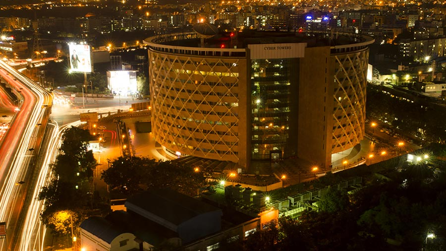
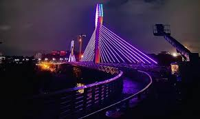
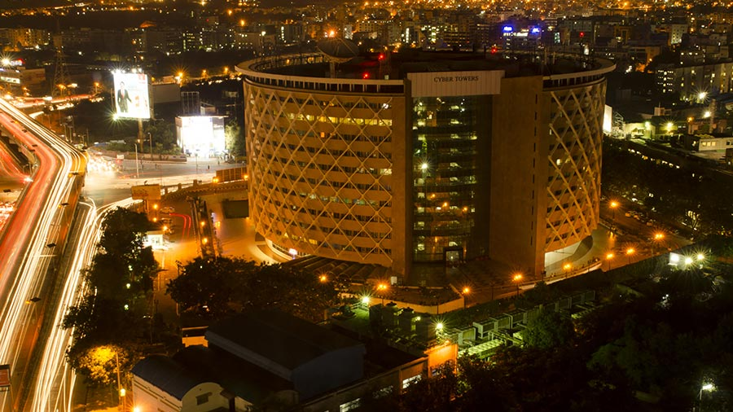
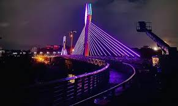

Hyderabad was founded in 1591 and planned as a grid with the Charminar at its centre. It has now grown well beyond the confines of the original walled city,to include a new town north of the Musi river, the Military Cantonment at Secunderabad and a burgeoning high-tech Estate, nicknamed “Cyberabad”.